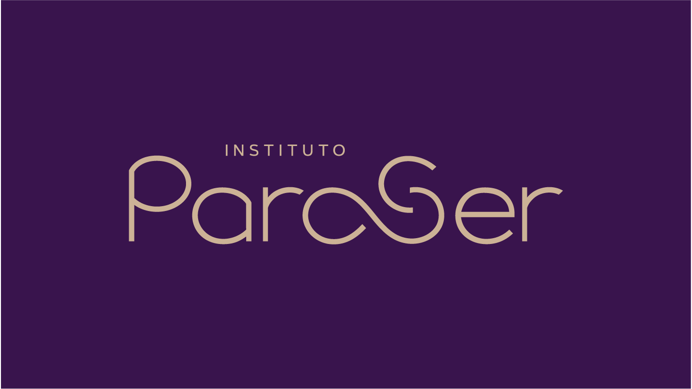
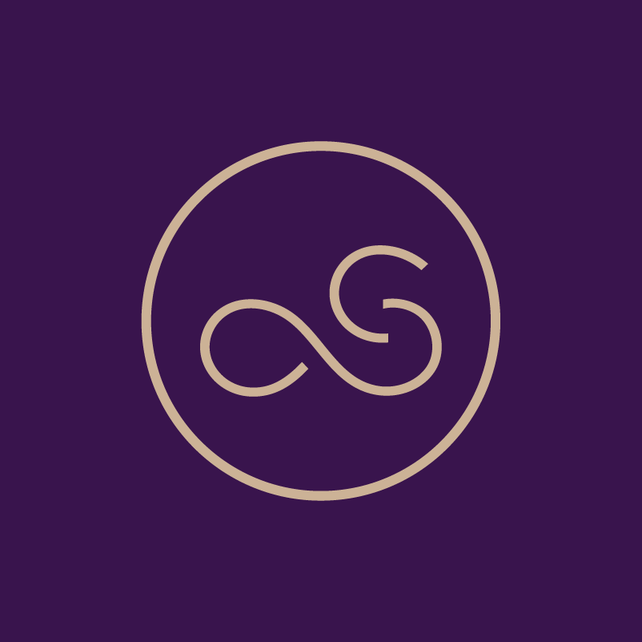

Estamos crescendo.
O melhor ainda está por vir.
E você faz parte disso.
o que vamos falar hoje
A nossa obsessão precisa ser a jornada da paciente.
Não a consulta. Não o procedimento. Não a venda.
A jornada inteira — do primeiro Google que ela deu até o dia em que ela indica a Paraser pra uma amiga.
por que jornada importa
A paciente de fertilidade tem 50 a 100 pontos de contato com a clínica.
Do primeiro DM no Instagram até o nascimento. Cada um desses 100 momentos pode ser o que prende — ou o que afasta.
Não é por dinheiro
0%
das pacientes que abandonam tratamento de fertilidade citam fatores emocionais, não financeiros nem clínicos.
Boivin & Domar, 2014 — Human Reproduction
A frase que importa
"Não me senti vista como pessoa."
Motivo nº1 declarado por quem desistiu antes de iniciar tratamento.
"A paciente não escolhe pelo melhor médico.
Ela escolhe pelo médico em quem confia."
— consenso na literatura de centros de referência (CCRM, Boston IVF, Genesis)
os 4 momentos da verdade
Onde a jornada vira ou quebra
💬
1. Primeiro contato (DM/WhatsApp)
Resposta em menos de 5 minutos → taxa de marcação dobra. Mais que 24h → pacientes somem.
🤝
2. A primeira consulta
78% das pacientes decidem se voltam nos primeiros 15 minutos. É decisão emocional, não clínica.
📢
3. A comunicação do resultado
Beta, USG, biópsia. O jeito como o resultado é dado impacta mais a retenção do que o resultado em si.
🌟
4. O pós-procedimento (48h)
Clínicas que dão follow-up nas 48h têm 3× mais indicações orgânicas. É o multiplicador da carteira.
o que fica na memória dela
Daqui a 5 anos, ela não vai lembrar do diagnóstico exato.
Ela vai lembrar se foi ouvida, se foi entendida, e se sentiu que o time estava com ela.
— Resolve.org · associação americana de fertilidade
quem chega via meta ads
O lead já chega com intenção
Tentando há 3+ anos
0%
Alta maturidade — sabem que precisam de ajuda especializada. Não estão pesquisando por curiosidade.
Nunca consultou especialista
0%
A Paraser pode ser o primeiro contato com uma clínica de fertilidade. O acolhimento define tudo.
⭐ Perfil ouro
0%
3+ anos tentando + já consultou especialista. Prontos para iniciar FIV. São os que fecham mais rápido.
Plataforma dominante
89% Instagram
Criativo que mais converte
🎥 Vídeo — depoimento de paciente
76% dos leads gerados

o caminho da paciente até nós · 2025–2026
O Funil Paraser
1 · Lead qualificado (Meta Ads)
~0
2 · Contato WhatsApp (ManyChat)
~0
3 · 1ª Consulta REALIZADA
0
4 · Punção FIV / Coito / FOT
0
5 · Beta positivo (gravidez)
0%
🟡 O GARGALO
0%
dos leads se perdem antes de conhecer a Paraser.
É aqui que tem o maior potencial.
🟢 TAXA DE GRAVIDEZ
0%
das transferências resultam em beta positivo.
Média nacional FIV: 40–50%. Paraser está acima.
Base 2025–2026 · R$ 116k investidos em Meta Ads · ~R$ 6/lead · dados Feegow + planilha betas · bioquímica contada como positivo
e se resolver o gargalo? · projeção 2026
Com 20% de conversão
1 · Lead qualificado (Meta Ads)
~0
2 · Contato WhatsApp (ManyChat)
~0
3 · 1ª Consulta REALIZADA
934
→
0
4 · Punção FIV / Coito / FOT
509
→
0
5 · Beta positivo (gravidez)
0%
🟢 CONSULTAS PROJETADAS
0
vs 934 atuais — +157% sem gastar 1 real a mais em anúncios.
🟢 TRATAMENTOS PROJETADOS
0
vs 509 atuais — +159% com o mesmo lead, só melhor atendido.
🍼 GRÁVIDAS PROJETADAS
0
vs 356 atuais — +568 famílias realizando o sonho de ter um filho.
Mesmo investimento. Mesma taxa clínica de 70%.
Projeção baseada no benchmark de top 25% clínicas de saúde · mesmo investimento em Meta Ads · base 2025–2026
Potencial por Médico
Punções de óvulos
📊 Cenário Atual
381 punções · 32/mês no time
🚀 Projetado — 20% conversão
988 punções · 82/mês no time
Dados reais Feegow mai/2025–mai/2026 · Excedente de Rodolfo redistribuído proporcionalmente aos demais · Meta: 20% conversão no funil
A história em 1 linha
O futuro da Paraser não está no chão da clínica.
Está no caminho que leva até ela.
Dentro daqui, a gente já é o melhor do mercado. 8 em cada 10 que sentam na cadeira do médico viram paciente.
Lá fora, 97 em cada 100 leads se perdem porque a jornada antes da consulta não está conectada.
Aí mora o crescimento.
o que já construímos pra fechar essa lacuna
Inovações 2025-2026
🧠
Sistema Integrado Paraser
Dashboard ao vivo: receita, agendamentos, financeiro, CRM, doadoras, estoque — tudo numa tela.
📋
CRM Comercial digital
Cada paciente em uma jornada visual no Kanban (Fluxo → Proposta → Quitado → Tratamento).
💬
Confirmações WhatsApp automatizadas
Toda agenda do dia seguinte é confirmada na hora certa, com o template certo (online vs presencial).
🗺️
Mapa de Salas em tempo real
Quem está em qual sala, agora. Quanto cada sala gerou de produção no dia/mês.
💰
Caixa Recepção digital
Fim do papel. Pagamentos lançados na hora, integrados com Financeiro e NF.
📊
Sumário Executivo por Médico
Cada médico tem seu próprio painel: receita mensal/anual, top procedimentos, evolução.
🎯
Pipeline → Slack
Orçamentos não fechados viram alerta no canal comercial. Ninguém cai no esquecimento.
📦
Controle de Estoque por NF-e
Importa automaticamente as notas fiscais. Saldo real-time. Baixa automática via Feegow.
👥
Doadoras compartilhadas
Sistema visual com perfis e matching multi-filtros (sangue, cabelo, olhos, pele).
cada um faz parte da jornada
Você é protagonista em algum dos 100 pontos de contato.
A jornada da paciente não é responsabilidade de uma área. É responsabilidade do time inteiro.
👩⚕️
Médicas e médicos
A consulta é o momento da verdade. 15 minutos definem se ela volta.
📞
Comercial / Atendimento
O primeiro DM. Resposta em 5 min dobra a marcação.
🏥
Recepção
A primeira cara que ela vê. O acolhimento é o sinal de tudo o que vem.
💉
Enfermagem
É o time com mais contatos diretos durante o tratamento. Confiança se constrói aqui.
💰
Financeiro
Transparência no orçamento e cobrança humana. Faz a diferença na hora de fechar.
📋
Coordenação
A orquestra que faz tudo isso funcionar junto, sem ruído pra ela.
Estamos crescendo.
O melhor ainda está por vir.
E você faz parte disso.
Obrigado por construir o Instituto Paraser todos os dias.
Vamos pra cima. ✨